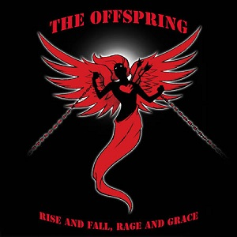

Rise and Fall, Rage and Grace
Publicado por Arthur Baldner em

Rise and Fall, Rage and Grace foi lançado em junho de 2008 pela gravadora Columbia Records, sendo necessários aproximadamente cinco anos para que o álbum fosse lançado.
Lista de músicas:
- Half-Truism -
Letras
- Trust in You -
Letras
- You're Gonna Go Far, Kid -
Letras
- Hammerhead -
Letras
- A Lot Like Me -
Letras
- Takes Me Nowhere -
Letras
- Kristy, Are You Doing Okay? -
Letras
- Nothingtown -
Letras
- Stuff Is Messed Up -
Letras
- Fix You -
Letras
- Let's Hear It for Rock Bottom -
Letras
- Rise and Fall -
Letras